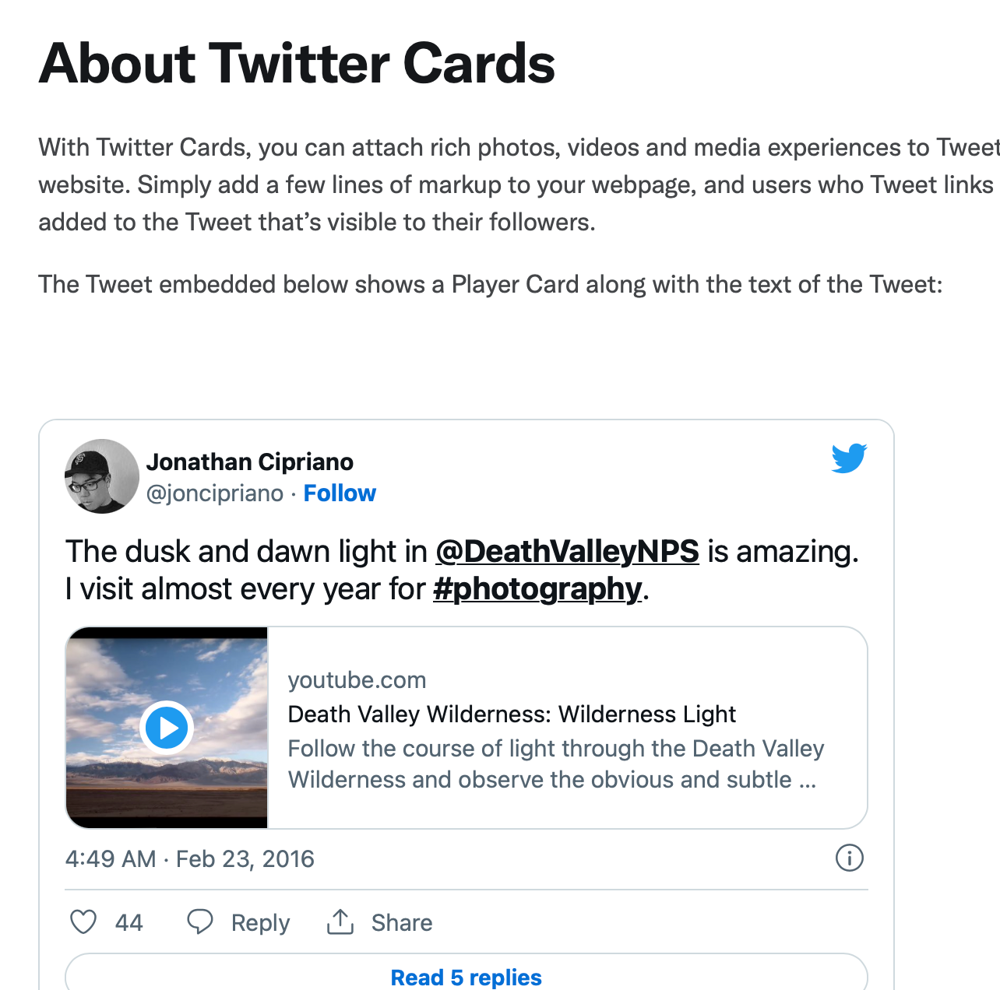
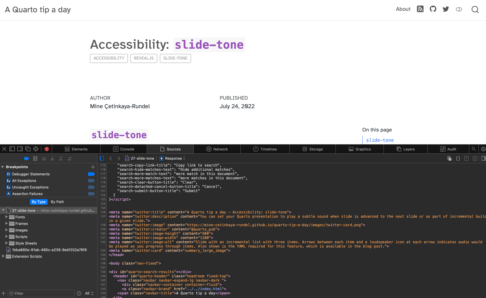
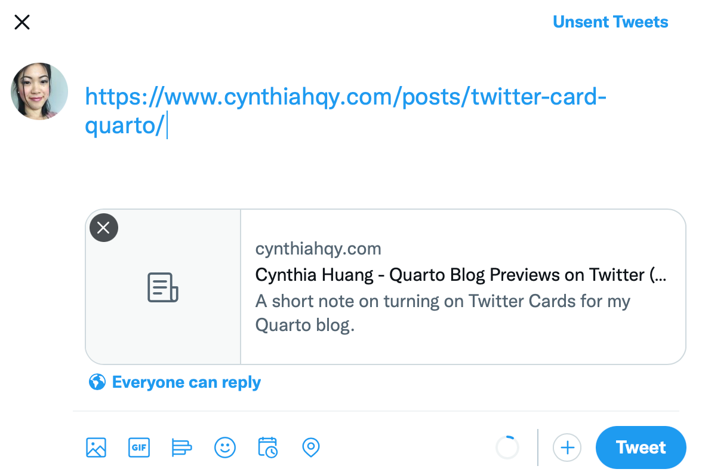
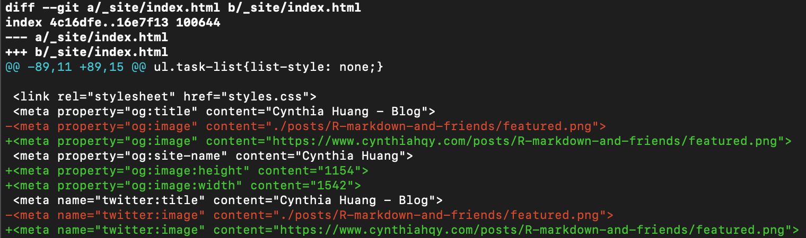

So, I almost spent an hour preparing the tweet for my latest blog post1. Why? Because I wanted the tweet to show a preview of the blog post, but no matter how many times I copy and pasted the link, no preview appeared. Thus, I had no choice but to go down the rabbit hole of trying to Google how to do something without knowing what that something is called…
Twitter Cards?
I started by searching blogdown image default, because:
- there’s way more Blogdown content out in the wild than Quarto (for now..) and,
- my mission started from a stubborn (and not at all time-efficient) refusal to separately upload the thumbnail image of my blog post to Twitter.
Unfortunately, this search yielded nothing useful… so I resorted to snooping the .html source code and Github repo of the wonderful A quarto tip a day website:

I managed to eventually work out that the preview things I wanted to make appear were called Twitter Cards. So I turned them on… or so I thought. I edited my Quarto project metadata (_quarto.yml), pushed the changes to my GitHub repo, refreshed my Netlify hosted website multiple times, but still no Twitter Card…
BONUS: Featured Images
To add a custom image to your twitter card make sure to specify a featured image in your document YAML. You can also specify the type of card you want displayed:
image: featured.png
card-style: summarySee Quarto docs for more on Twitter-Card options.
Resources and References
A quick reference for the social metadata options can be found in the Reference/Projects/Websites section of the Quarto official docs, but the examples in Guide/Websites/Social Metadata are much easier to understand.
The Getting started with Cards guide on the Twitter Developer Platform helped me understand the difference between the site: and creator: YAML options. Basically, use site: for “Website Attribution” of the publisher (e.g."@nytimes"), and creator for the individual user who created the content inside the card (e.g. "@cynthiahqy").
If you want to preview how your link will appear you can use the Open Graph preview tool.
Make your own Quarto Blog
If you are interested in using Quarto to make your own blog, a good place to start is Bea Milz’s blog post Creating a blog with Quarto in 10 steps.
Epilogue: More Adventures in Quarto and Website Debugging

As I went to share this post on twitter, I found the card was being generated but the image I wanted use didn’t show up… leading me to another convoluted troubleshooting session. I tried:
- changing the featured image to a different one
- changing the name of the featured image file
- doing all sorts of card debugging fixes suggested by the Internet.
But it turned out it wasn’t a metadata issue. Quarto hadn’t copied the image file over into my output directory (_site/ by default), so the image wasn’t being hosted on website to be shown in a twitter card. I think the underlying issue was that I had left the draft: true option on, which apparently means images don’t get copied over, not just that the post wont be shown in listings.
In any case, removing that option fixed the issue, and thus continues the saga of learning website design through the convenient but somewhat opaque framework of Quarto website projects.
Footnotes
Citation
@online{tzuk2022,
author = {Tzuk, Omer},
title = {Thumbnail {Previews} for {Quarto} {Websites} (for {Dummies)}},
date = {2022-08-15},
url = {https://omertzuk.github.io/posts/twitter-card-quarto/},
langid = {en}
}
Social Metadata Options!
Long story short, I needed to do BOTH of the following:
_quarto.yml:You can publish your website without including the
site-url:option (I know because I did that), butquarto renderwon’t producerobots.txtorsitemap.xmlfor you, and your image links won’t be properly prepended:_quarto.ymlQuarto very helpfully includes tools for generating the metadata required by Twitter to generate preview cards. However, you need to turn those tools on:
Combining the two steps above added the appropriate
<meta property>tags into the .html output files rendered by Quarto: